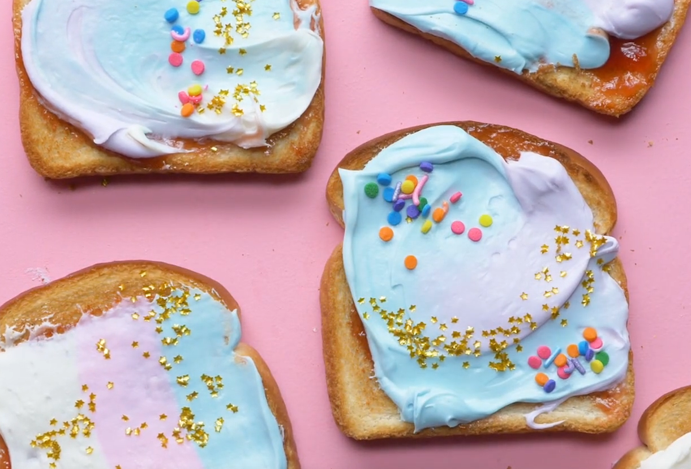
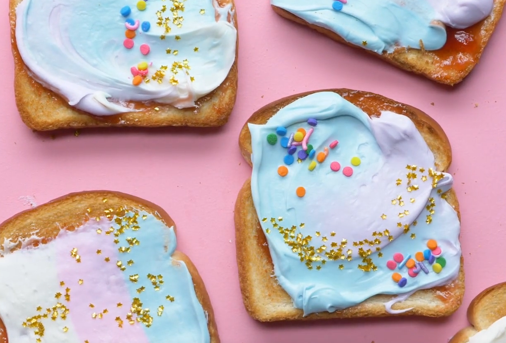

Welcome to our fun and delicious recipe website designed just for kids! Explore a world of tasty adventures where young chefs can discover easy-to-follow recipes, learn kitchen skills, and create scrumptious dishes with a dash of creativity. From colorful snacks to delightful desserts, we've got kid-friendly recipes that make cooking an exciting and educational journey. Let's get cooking together!
 
